This page covers the core vocabulary from Mark Wolf’s Building Imaginary Worlds — a strong reference for worldbuilding terms.
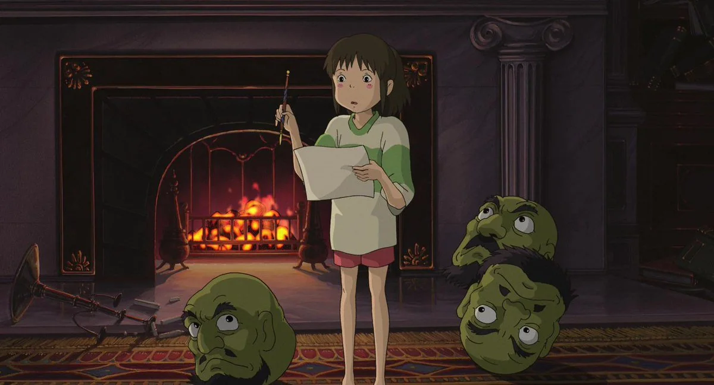
(Spirited Away, 2001 — a world with new logic)Chihiro’s point-of-view provides a straightforward vehicle for us learn about the world; she is doing so with us. Often, she is as surprised as us. But sometimes differently - when and how?
Worlds Next to Worlds
Wolf (p.17) says that fictional worlds don’t exist inside our world. They exist in comparison.
The practical consequence: we bring everything we know about the real world with us when we enter a fiction. For example, The Planiverse has seasons, gravity, hunger. Middle-earth has weather, fatigue, economics.
Our question is, what do they add, subtract, and change?
Definitions
J.R.R. Tolkien’s Groundwork: Reading - On Fairy-Stories (Tolkien) → Worldbuilding - Definition and Scope
According to Wolf, worldbuilding is the process of constructing a fictional world with an interest in:
| Consistency and Internal Logic | the world doesn’t contradict itself |
| Completeness | no world can be fully complete, but it can feel inhabited |
| Speculation | the builder imagines beyond what’s shown |
| Invention | deliberate departure from the primary (real) world |
| Plausibility | the world earns belief — a product of the other four |
Consistency and Internal Logic
→ Consistency and Internal Logic
Wolf (p.43): a world does not have to be realistic, but it can be consistent.
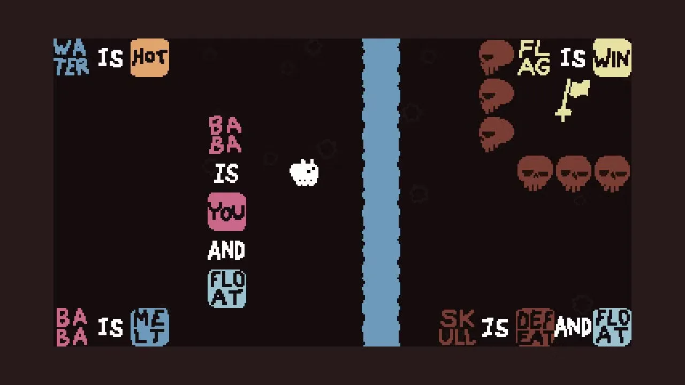
Baba Is You (2019): the rules of the world are literally written on screen as movable word tiles. Rewrite them, and the world’s rules change.
Completeness
Wolf (p.38–39): Completeness “refers to the degree to which the world contains explanations and details covering all the various aspects of its characters’ experiences, as well as background details which together suggest a feasible, practical world”.
Ancillary details help believability.
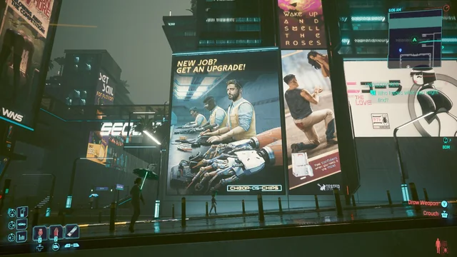
Cyberpunk 2077 (2020) billboards advertise corporations, products, and political slogans that don’t impact the main story.
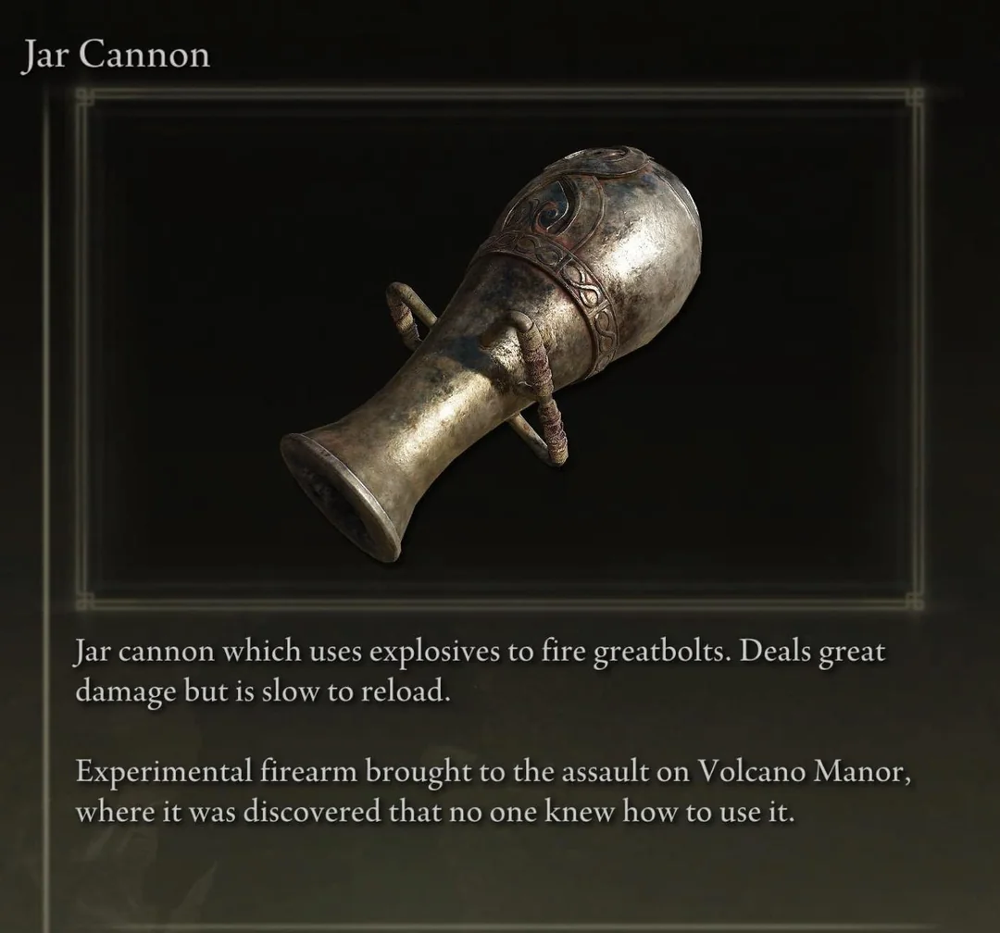
Elden Ring (2022) reveals the history of the Shattering through item descriptions and environmental storytelling.
Firewatch (2016): the ranger’s backstory unfolds at the beginning. https://www.youtube.com/watch?v=cJxBMoMkY1U
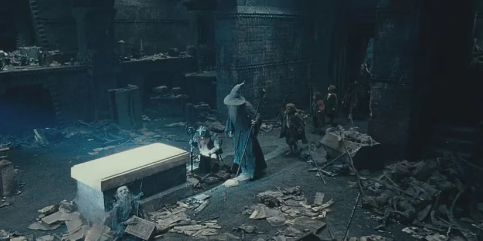
In Middle-earth: the old ruins, the faded maps, the languages with their own grammatical history — these are signals that something happened, long before the story began.
Catalysts of Speculation
Wolf (p.60): Catalysts of Speculation — what the writer leaves untold, in order to imply. This is designed ambiguity — a gap that invites the audience to lean in and imagine, or theorize.
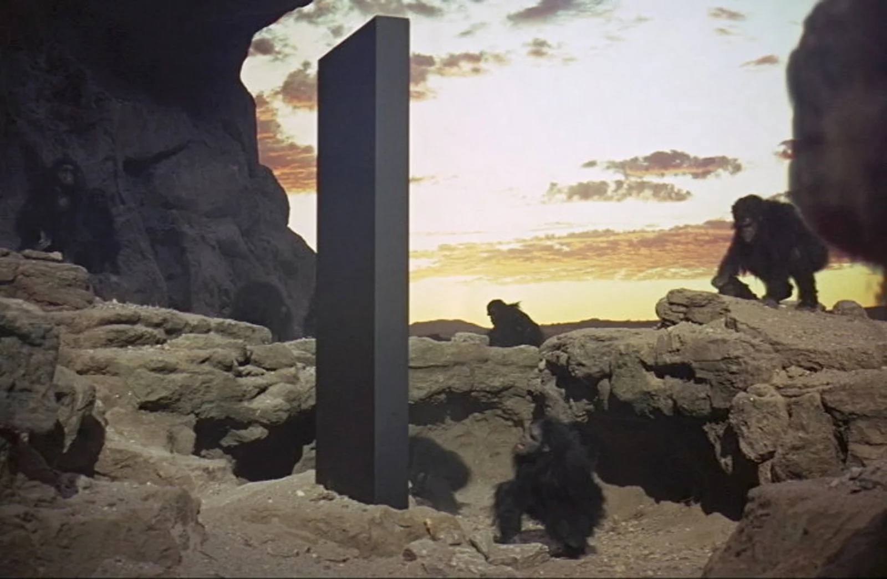
2001: A Space Odyssey (1968) — the monolith.
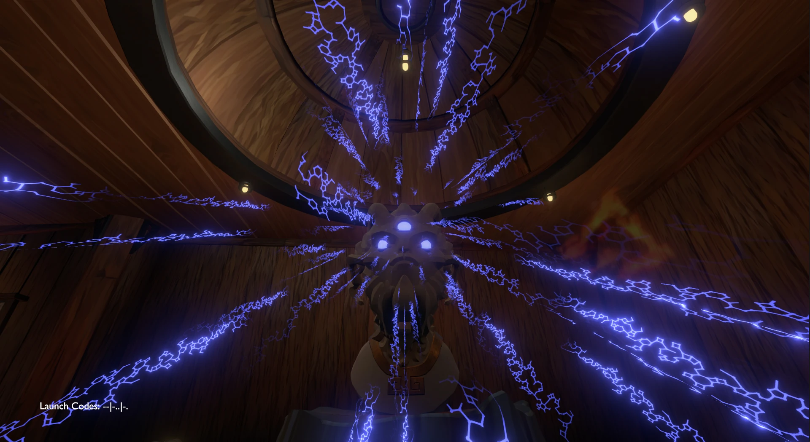
Outer Wilds (2019): the Nomai ruins. What happened to them? In this case the game has an answer — but withholds it long enough that speculation drives exploration.
The end of “The Ones Who Walk Away from Omelas” lets us ponder.
Invention (Four Types)
→ Wolf’s Taxonomy of Invention
Wolf (p.34): Invention is the degree to which a world departs from primary world assumptions. (The “primary world” is the one we live in).
Nominal Invention
Real-world things renamed. The concept works exactly like its real-world equivalent — it’s just called something different.
Star Wars (1977) uses credits instead of money; and parsecs instead of light-years.
In Middle-earth: pipeweed (tobacco), lembas (travel bread), mithril (an ultra-light silver-like metal), mathoms (useless keepsakes you can’t bring yourself to throw away).
(Pipeweed — tobacco by another name.)
The novel Reading - Dark Eden (Beckett) English has changed over five generations of a shipwrecked family.
Cultural Invention
→ Cultural Invention Social structures, norms, and institutions changed.
In The Planiverse, the 2D creatures have customs for passing one another.
“The Ones Who Walk Away from Omelas” (1973) — Le Guin strips story and context away to examine a single social arrangement: a utopia built on the suffering of one child.
Disco Elysium (2019) comments on (real) history by depicting with a different political configuration.
Natural Invention
→ Nature and Invented Physics Physics, biology, and ecology changed.
(Arrakis — an entire culture follows from one ecological fact: close to no water)
Arrakis (Dune, 1965): no surface water, sandworms, spice that enables space travel — culture, religion, economics, and body all follow from them.
Outer Wilds (2019): the sun goes supernova every 22 minutes. That single natural law generates the entire game.
In Middle-earth: Dragons, Ents, Balrogs.
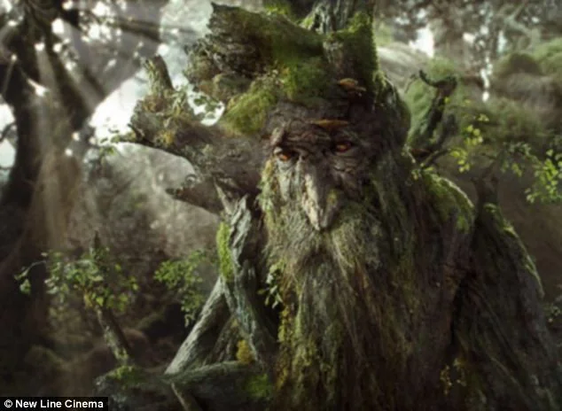
(Treebeard — implies a second biology)Ontological Invention
The fundamental nature of reality changed.
Annihilation (2018): the rules of identity and biology don’t hold inside Area X. https://www.youtube.com/watch?v=RSl6bwZabjA&list=PLZbXA4lyCtqqVgxOY_5EIRF552C3l3KN0&index=6
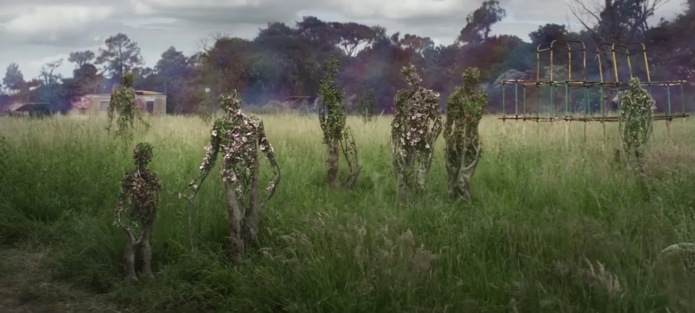
Everything (2017): all matter is conscious and you can play the role of anything.
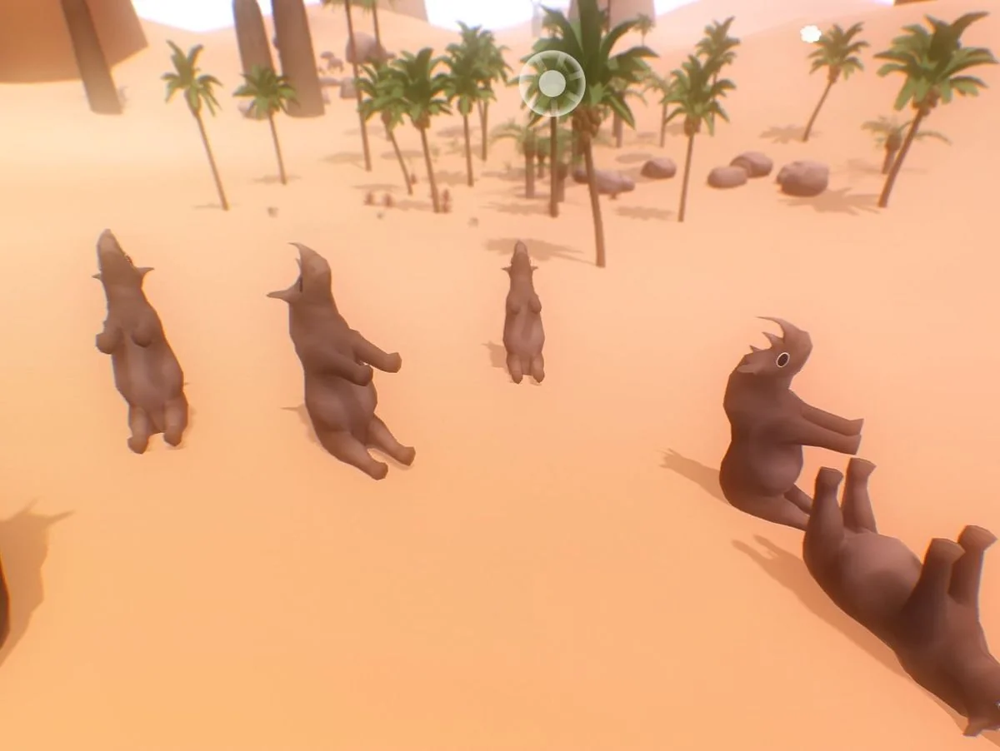
[[Reading - The Planiverse (Dewdney)|The Planiverse]] (1984): a 2D world — all physics, biology, and architecture follow from having only two spatial dimensions.
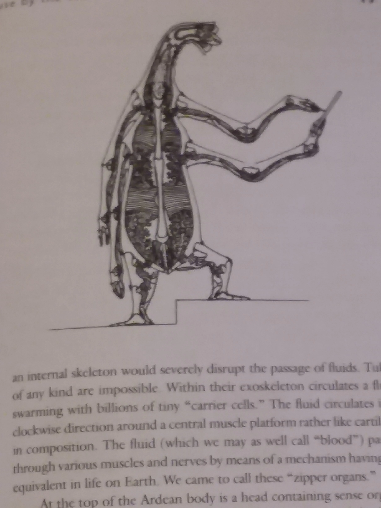
In Middle-earth: Magic might be the most common ontological invention in all of fiction.
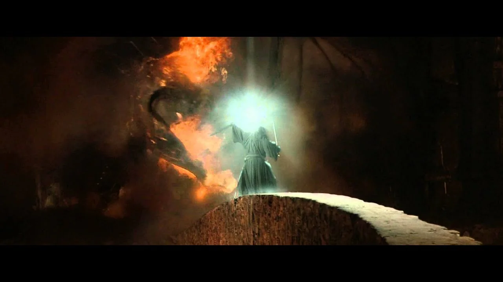
Wolf’s Eight Elements of Worlds
→ World Structure - Wolf’s Eight Elements
Three foundational structures — the architecture that holds everything else
| Space (Maps) | Physical layout: maps, geography, distances, scale |
| Timelines | History, era, how the world ages and changes |
| Geneologies | The beings who inhabit and act within the world |
Five content elements — what fills the world and gives it meaning:
| Nature | Ecology, physics, biology — the non-human systems |
| Culture | Social structures, norms, institutions, customs |
| Language | Constructed languages or naming conventions that imply a system |
| Mythology | Creation stories, religion, legends — what the world tells about itself |
| Philosophy | What the world believes about existence, mortality, good, evil, free will |
Space (Maps)
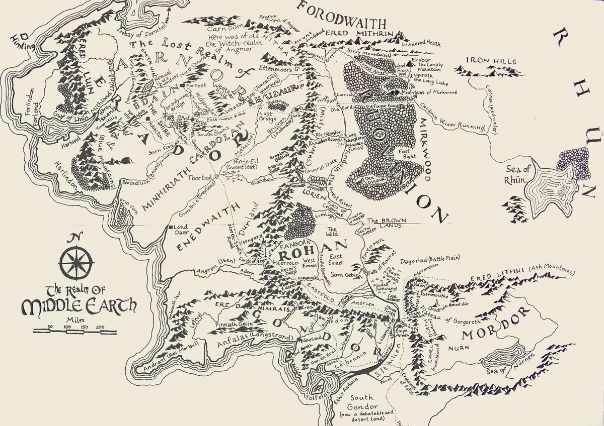
(Tolkien’s original hand-drawn Middle-earth map — he drew it first)“Maps relate a series of locations to each other, visually unifying them into a world.”
The Middle-earth map is arguably the most famous fantasy map ever made. Tolkien drew it before he wrote the books, using it.
Timeline
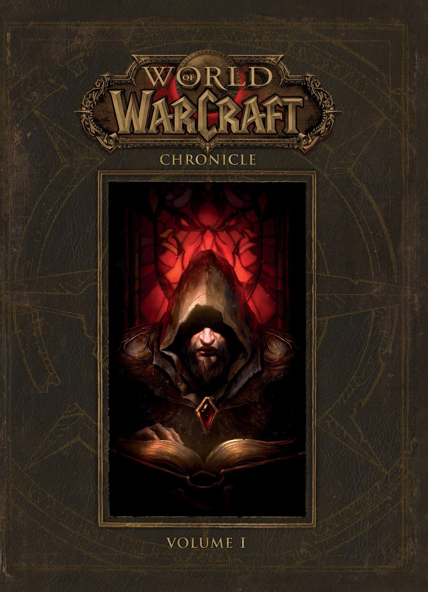
World of Warcraft Chronicle Volume 1 (2016) documents the creation of the universe by the Titans, the ordering of Azeroth, the corruption of the Old Gods, the War of the Ancients, and the Great Sundering — all of it unfolding billions of in-world years before a player ever logs in.
Genealogies
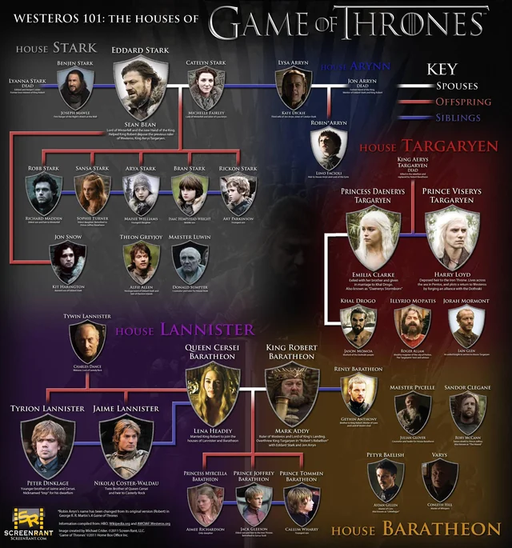
Game of Thrones (2011) makes genealogy structural. The family tree is a political map.
“Genealogies relate characters to one another, giving them a context within larger frameworks which are familial, ancestral, social, institutional, and historical. They include such things as family tree charts connecting ancestors and descendants, kinship diagrams of lineal and collateral kin, lineages of rulers and their heirs, and hereditary systems which pass on knowledge, experience, titles, and property down from one generation to another.”
Nature
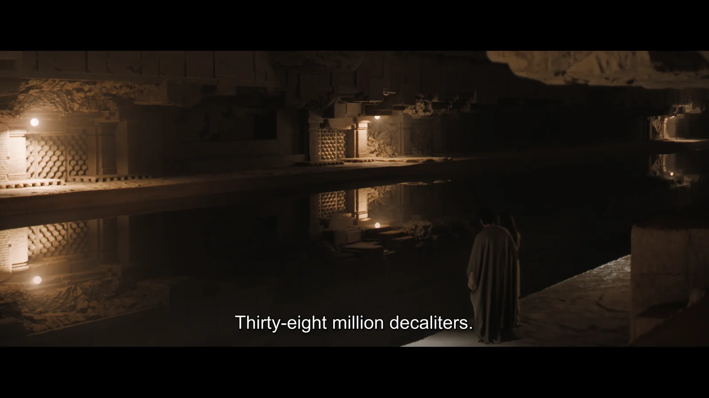
“Nature deals with the materiality of a world, its physical, chemical, geological, and biological structures and the ecosystems connecting them.”
Arrakis (Dune, 1965): Water scarcity shapes culture, religion, economy, and body.
Culture
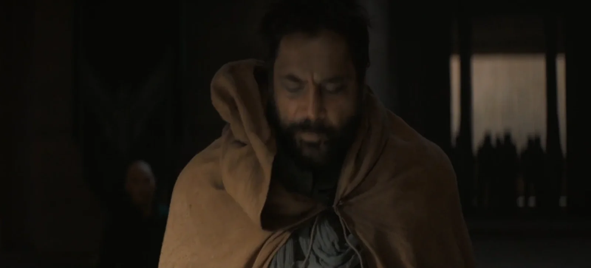
Stilgar, leader of the Fremen, spits on the table in front of Duke Leto. On Arrakis, where water is the most precious substance in the world, offering the moisture of your own body is the highest sign of respect.
“Culture links nature to history and is usually central to the unique situation that provides a story’s conflict; and an invented culture can be more specifically tailored to the author’s needs and does not come with the baggage of an existing culture. By providing a worldview that shapes the natural world’s resources into such things as agriculture, architecture, clothing, vehicles, and artifacts, which in turn inform customs, traditions, language, and mythologies, culture grounds and connects the various productions of a people into a (hopefully) coherent structure through which characters see the secondary world”.
Language
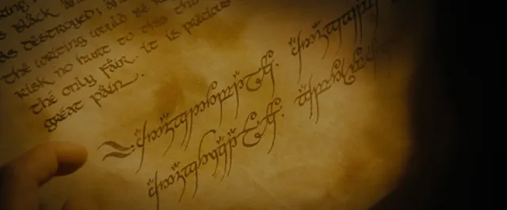
“Many imaginary worlds use constructed languages along with their invented cultures and peoples”.
Tolkien was a professional philologist — a scholar of languages and their histories.
Mythology
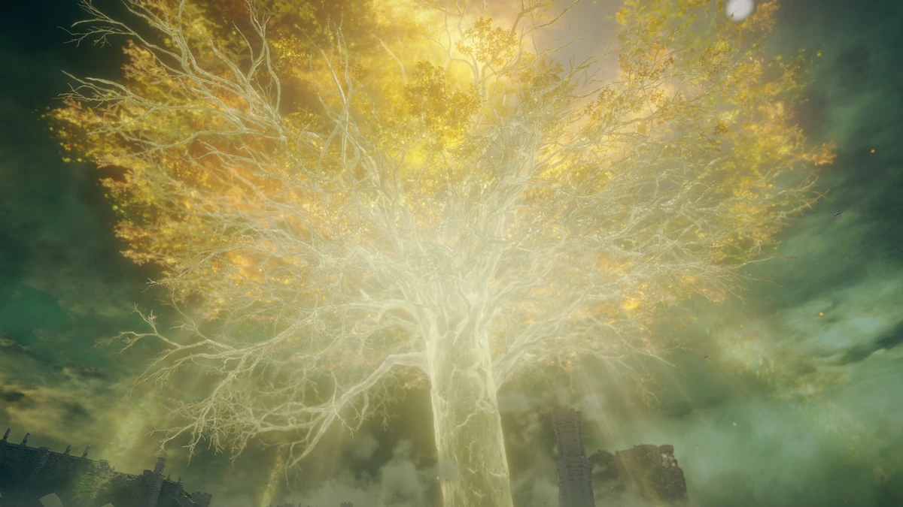
Elden Ring (2022) — The Erdtree stands at the center of the Lands Between — a vast, golden, impossibly ancient tree that the game’s entire civilization worships.
“Mythologies structure secondary worlds by giving them a history and context for events, through legends and stories of origins that provide backstories for the current events and settings of a world. They often reveal how characters and ongoing problems came to be, so that story events seem more meaningful and perhaps even the completion of a long character arc or the resolution of an age-old conflict. Mythologies, then, provide historical depth, explanations, and purpose to the events of a world”.
Philosophy
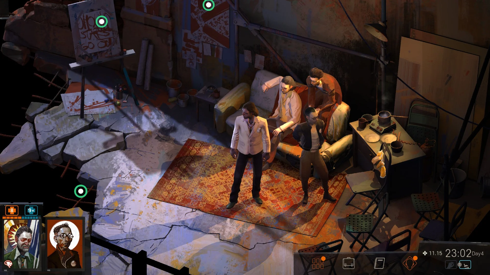
Disco Elysium (2019): explicit political philosophy; the world is a debate about ideologies and what they cost.
The World Is Not A Story, But It Can Facilitate One
Traditional storytelling values narrative economy — every detail earns its place. Anton Chekhov put it this way:
“If in the first act you have hung a pistol on the wall, then in the following one it should be fired.”
But… “Worldbuilding doesn’t necessitate narrative economy”. (p.29)
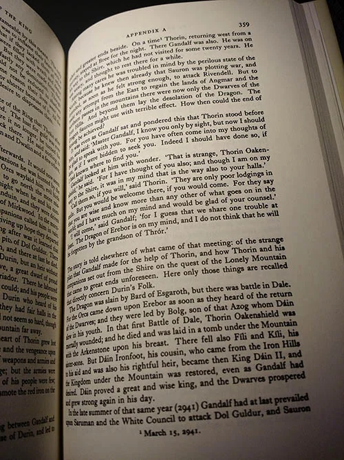
(Tolkien’s appendices — hundreds of pages of history LOTR never references)Middle-earth existed as a mythology for decades before The Hobbit. Tolkien’s appendices, the Silmarillion, the Unfinished Tales — most readers don’t read them.
Red Dead Redemption 2 (2018) runs 60+ hours. Most of it has nothing to do with Arthur’s story. NPCs live on schedules. Towns have their own histories. The open world implies a life that goes on whether or not the camera is pointing at it.
Inventions (Wolf p.35)
| Type | What it covers |
|---|---|
| Nominal | New names for real things (credits instead of dollars) |
| Cultural | Customs, technology, institutions, objects, ideologies |
| Natural | New creatures, plants, landmasses (hobbits, sandworms) |
| Ontological | Laws of physics, space, time — deepest level of change |
World Elements (Wolf p.154–155)
| # | Element | What it covers |
|---|---|---|
| 1 | Space | Physical/geographic extent of the world |
| 2 | Time | History, present moment, temporal logic |
| 3 | Characters | Inhabitants who give the world agency and perspective |
| 4 | Nature | Landscape, climate, flora, fauna, physics |
| 5 | Culture | Customs, technology, institutions, objects |
| 6 | Language | Languages, dialects, naming conventions |
| 7 | Mythology | Belief systems, cosmology, religion, founding stories |
| 8 | Philosophy | Underlying values; what the world thinks is true |
Page References
| Concept | Page | Note |
|---|---|---|
| Possible worlds framework | 17 | Fictional worlds live next to the real world in our minds |
| Ryan’s world definition | 19 | Connected objects, habitable environment, intelligible totality |
| Narrative economy vs. worldbuilding | 29 | Worldbuilding doesn’t necessitate narrative economy |
| Invention defined | 34 | Degree to which primary world assumptions are changed |
| Four types of invention | 35 | Nominal, Cultural, Natural, Ontological |
| Common reused inventions | 37 | Elves, clones, laser guns, antigravity |
| Completeness | 38–39 | A degree; unnecessary details help believability |
| Catalysts of speculation | 60 | What you leave untold — Wolf’s own term |
| Three foundational structures | 154 | Space, time, characters |
| Five content elements | 155 | Nature, culture, language, mythology, philosophy |
| Narrative defined | 198–199 | Causal chain; threads; braids |
| Backstory | 202 | Pre-story narrative |
Wolf covers transmedia and AAA scale worldbuilding in later chapters — how games adapt movies, and how large productions approach world design as an explicit discipline.
See also: Worldbuilding - Definition and Scope · Consistency and Internal Logic · Completeness · Catalysts of Speculation · Wolf’s Taxonomy of Invention